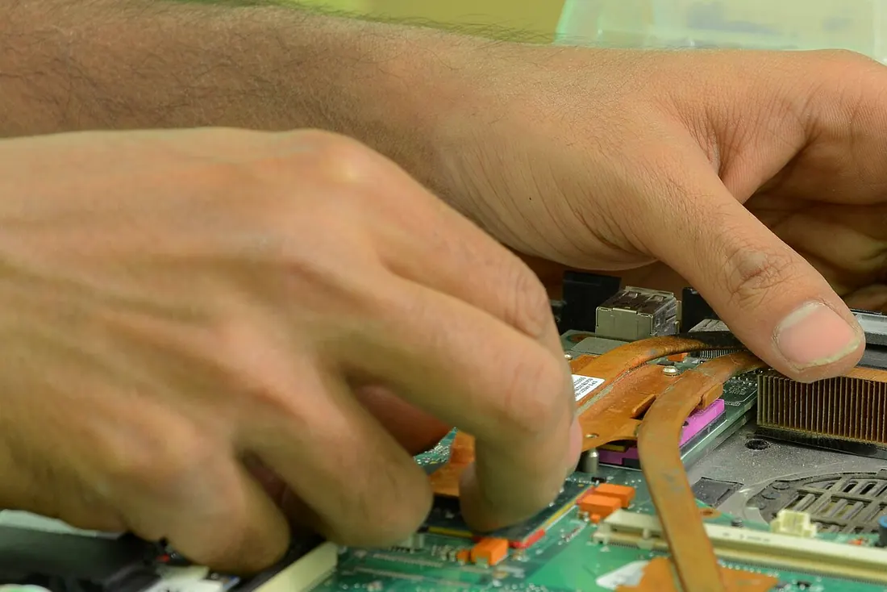
01 / LaptopRepair · Upgrade · Maintenance
Laptop
Mati total, overheat, layar, keyboard, sampai upgrade RAM & SSD.
Lihat service laptopLaptop · HP · Android · Apple iOS
Servis laptop, HP Android, dan iPhone dengan proses yang jelas: diagnosa dulu, jelaskan temuannya, baru dikerjakan. Tanpa jargon yang bikin bingung.
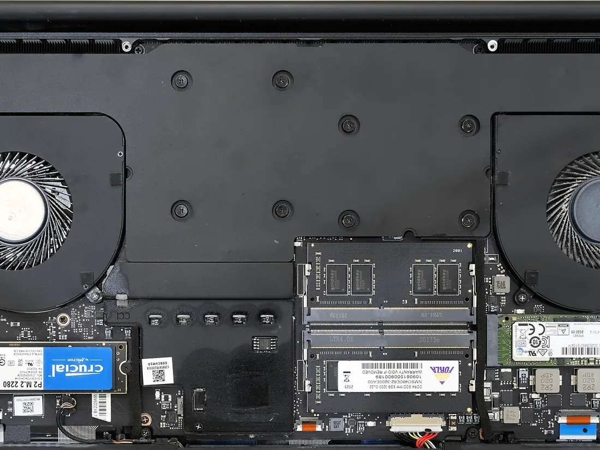
Board inspection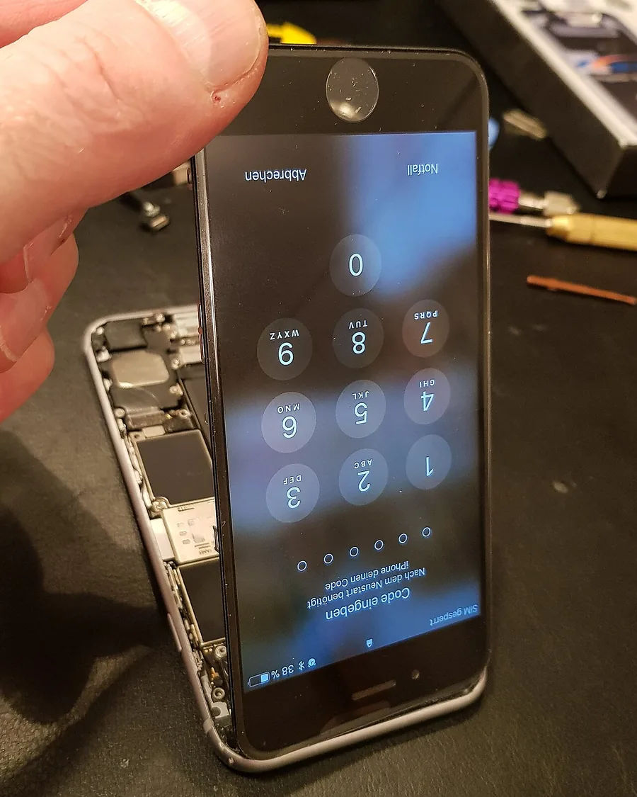
HP / LCDMasalah dicek sebelum bicara biaya. Bukan menebak dari gejala saja.
Temuan dan rencana pekerjaan dibahas sebelum kamu memutuskan.
Penjelasan pakai bahasa sehari-hari, bukan istilah teknis berlebihan.
Solusi mengikuti temuan pada perangkat, bukan asumsi dari modelnya.
01 / Perangkat
Apa pun perangkatnya, ceritakan masalahnya. Kami bantu cek penyebabnya dan tentukan langkah yang paling masuk akal.

01 / LaptopRepair · Upgrade · Maintenance
Mati total, overheat, layar, keyboard, sampai upgrade RAM & SSD.
Lihat service laptop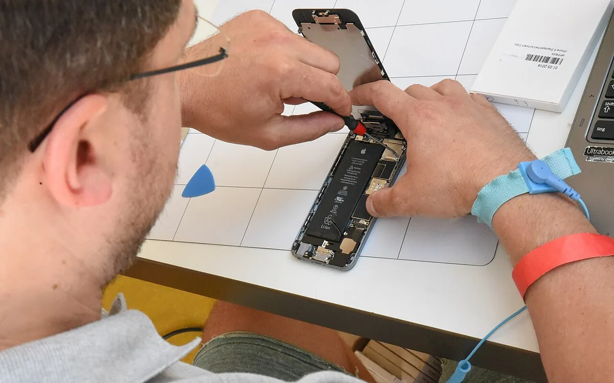
02 / HPAndroid · iPhone · Display · Battery
Mati total, layar pecah, baterai, charging, bootloop, sampai board-level.
Lihat service HP02 / Layanan
Dua perangkat, satu standar kerja. Mulai dari pemeriksaan kondisi, bukan dari daftar ganti part.
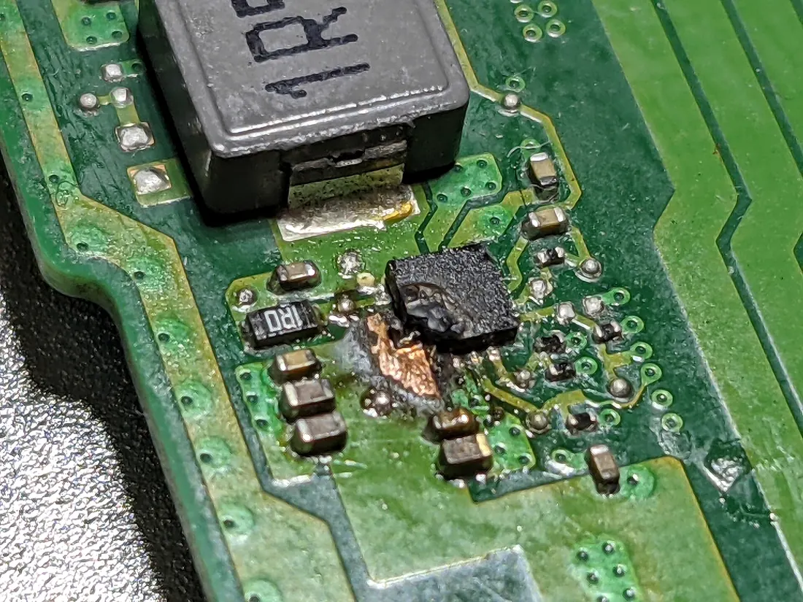
Mati total · Motherboard
Pengecekan jalur power, adaptor, baterai, sampai komponen motherboard. Kami cari penyebabnya dulu sebelum bicara penggantian.
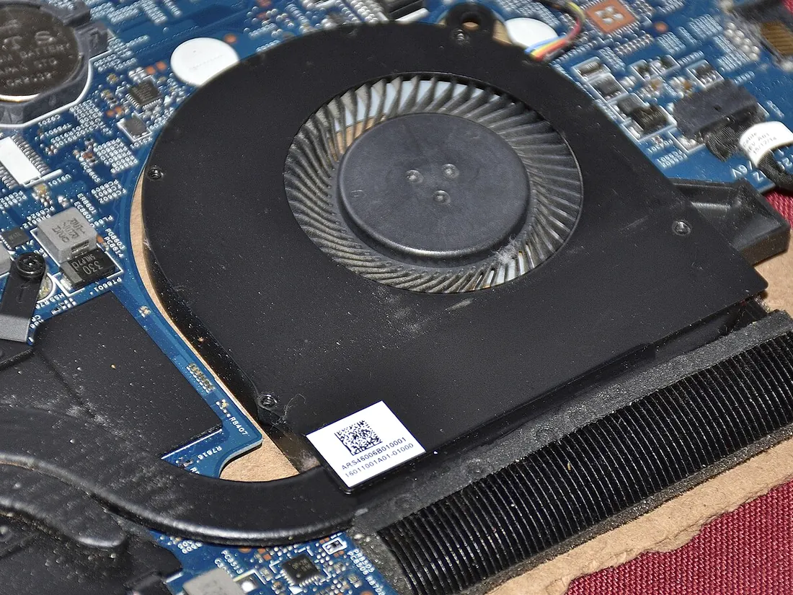
Overheat · Maintenance
Bongkar, bersihkan heatsink dan fan, ganti thermal paste, lalu tes suhu. Untuk laptop yang cepat panas atau fan-nya berisik.
Display
Layar blank, bergaris, atau pecah. Termasuk cek konektor dan fleksibel display.
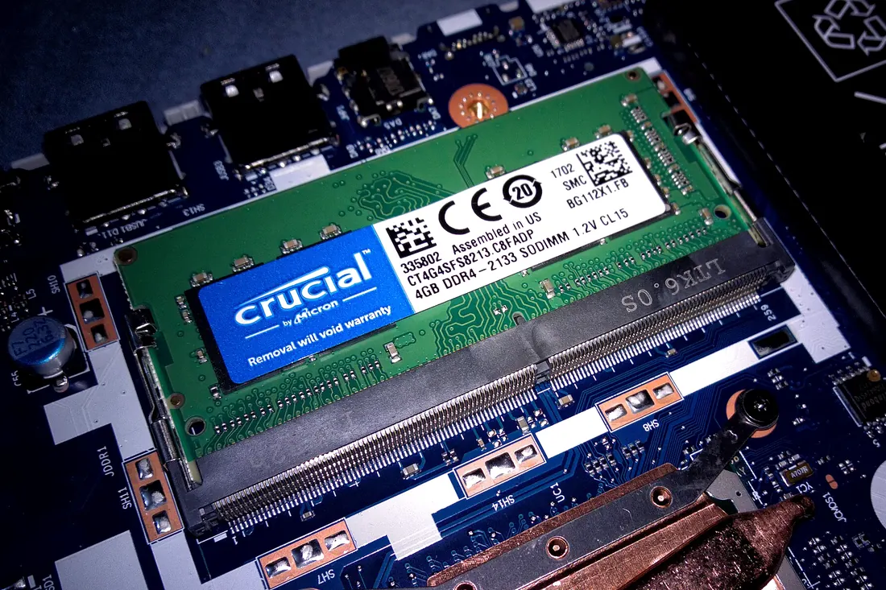
Performa
Tambah memori atau pindah ke storage lebih cepat, sesuai dukungan perangkat.
Input
Tombol tidak responsif, double press, atau keyboard terkena cairan.
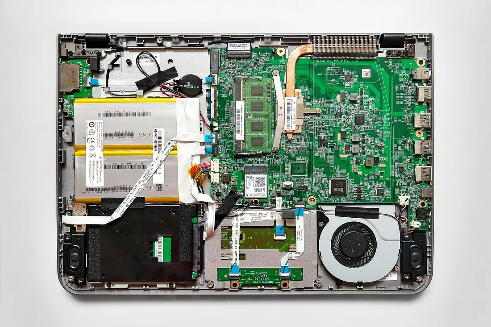
Sistem
Pasang ulang sistem, driver, dan aplikasi. Rencana data dibicarakan sebelum proses.
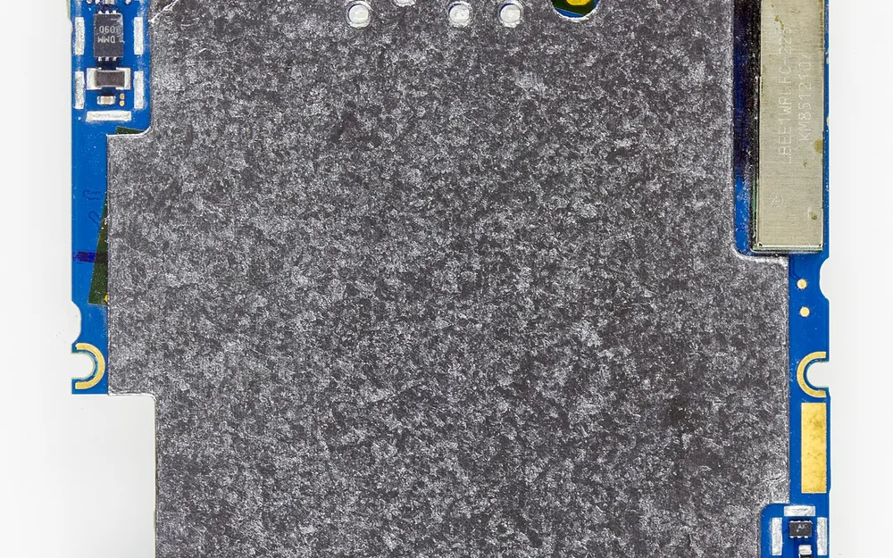
Mati total · Motherboard HP
Pengecekan jalur power, baterai, port charging, sampai komponen board. Kami cari penyebabnya dulu sebelum bicara penggantian.
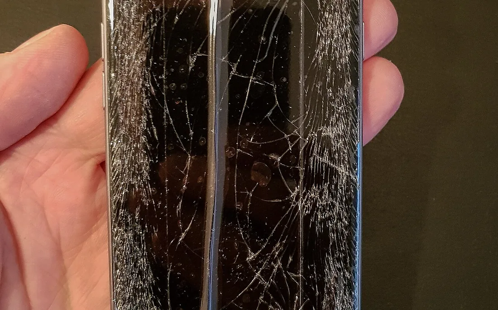
Display · Touchscreen
Layar pecah, blank, atau touchscreen tidak responsif. Cek panel dan fleksibel display dulu sebelum menentukan penggantian.
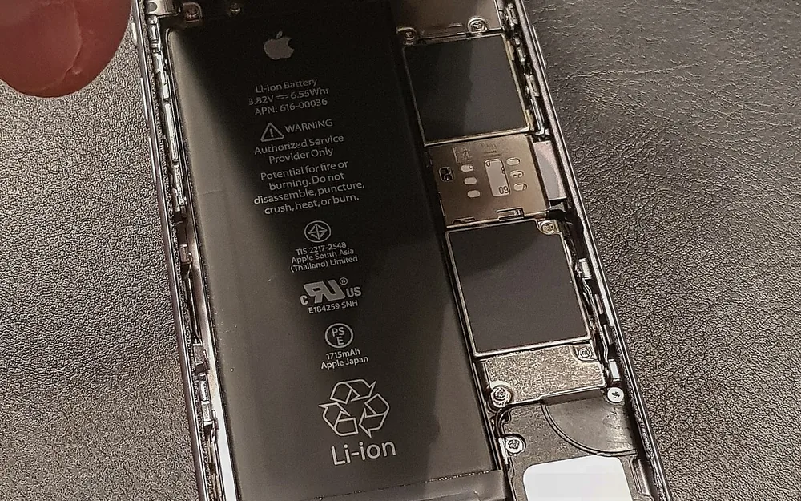
Daya · Baterai
Baterai cepat habis atau HP tidak charging. Cek baterai, port, dan jalur daya.
Sistem · Bootloop
Stuck logo, bootloop, atau sistem bermasalah. Rencana data dibicarakan dulu.
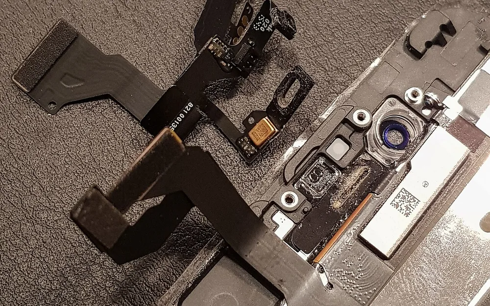
Kamera · Speaker · Tombol
Kamera blur, speaker pecah, atau tombol tidak responsif. Dicek komponen dan fleksibelnya.
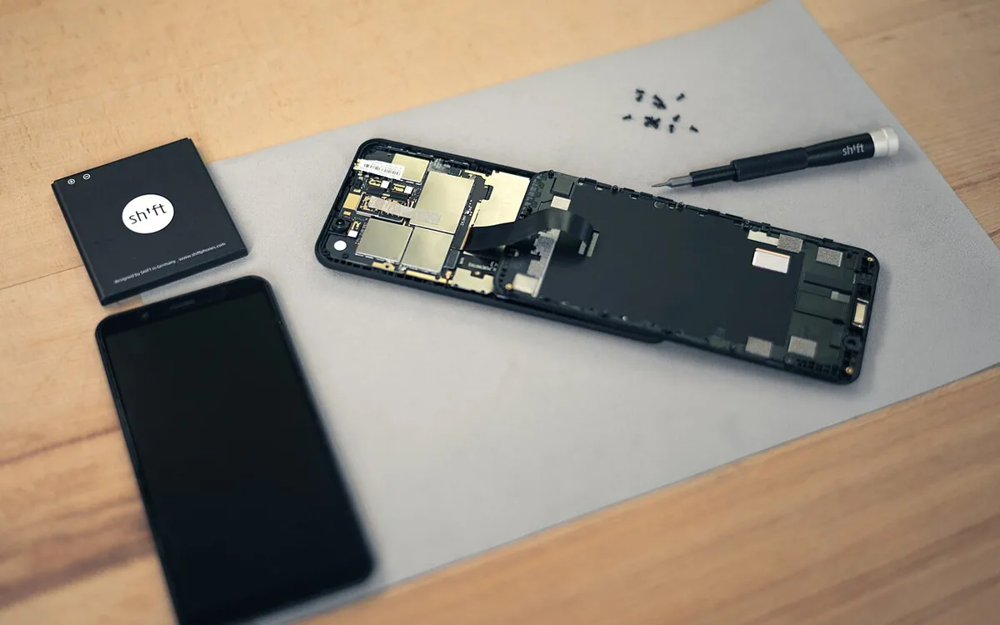
Water damage · Inspeksi
HP terkena air? Bongkar dan cek korosi dulu sebelum menentukan tindakan.
Juga menangani: laptop lemot, baterai, engsel, port charging, dan perawatan rutin — termasuk HP Android dan iPhone.
Tanya layanan lain03 / Gejala
Nggak harus tahu nama komponennya. Pilih perangkat dan gejalanya, langsung cerita ke kami. Diagnosa awal bisa lewat WhatsApp.
Pilih salah satu — pesan WhatsApp otomatis terisi dengan gejalamu.
04 / Kenapa ICanFix
Karena servis yang baik dimulai dari penjelasan yang jujur — bukan dari daftar kerusakan yang dibuat-buat. Untuk laptop maupun HP.
Kamu tahu apa yang rusak, apa yang dikerjakan, dan kenapa langkah itu diambil.
Tidak semua masalah berakhir dengan ganti part. Kami prioritaskan langkah yang paling masuk akal.
Dijelaskan tanpa istilah teknis berlebihan. Kalau ada pilihan, kami bantu bandingkan.
Setiap unit diperiksa dari kondisinya sendiri, bukan dari asumsi model atau merek.
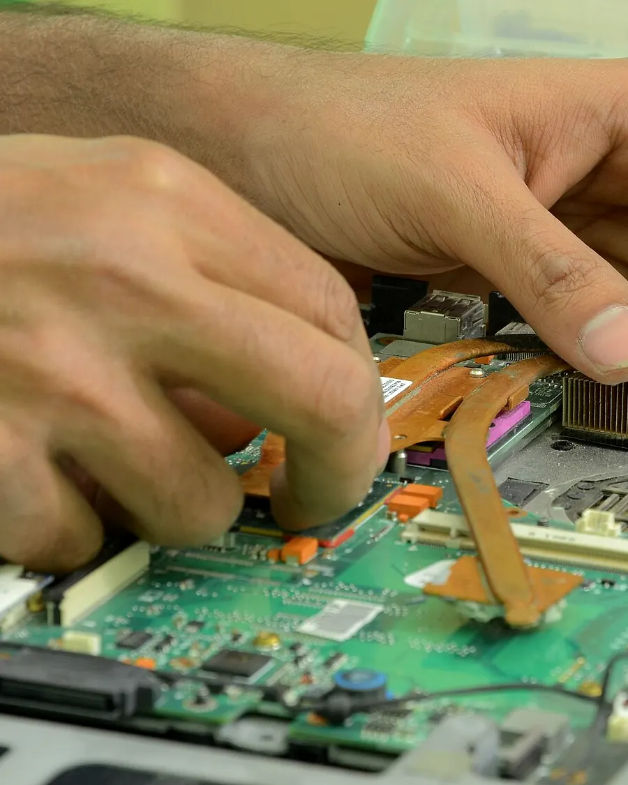
Workshop / InspectionPerangkat diperiksa dulu. Keputusan diambil setelahnya.
05 / Service Notes
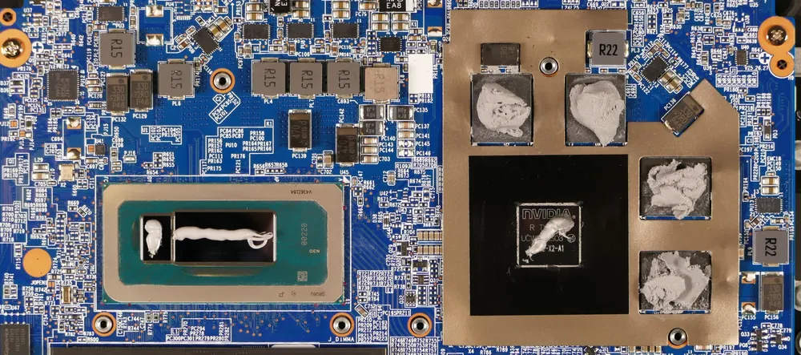
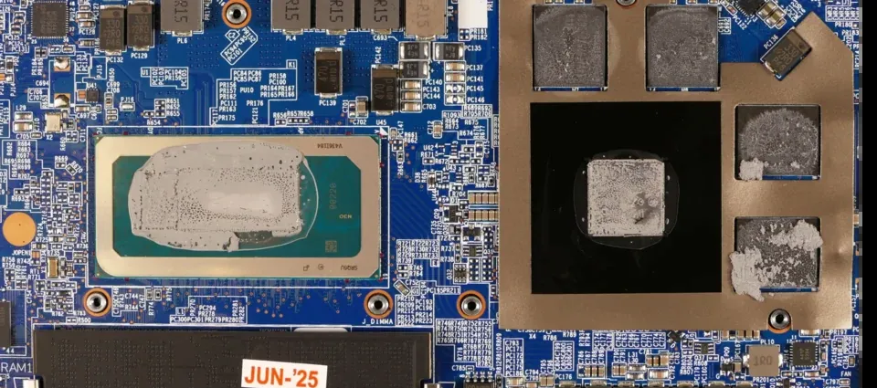
Before After Geser untuk bandingkanPasta thermal kering dan jalur pendingin kotor dibersihkan, di-repaste, lalu dites kembali.
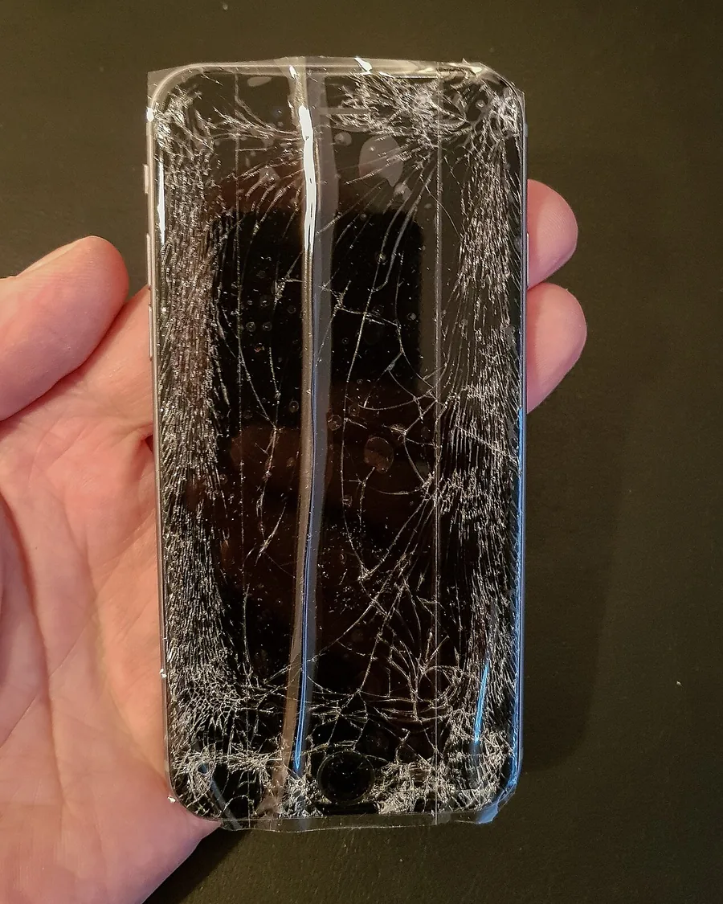
Panel retak diganti, touchscreen dan fungsi display dites ulang sebelum diserahkan.
Pindah ke SSD dan tambah memori untuk respons yang lebih cepat. Upgrade disesuaikan dukungan motherboard.
Baterai cepat habis dan HP tidak mengisi. Baterai serta jalur charging diperiksa sebelum penggantian.
Pemeriksaan jalur power dan komponen board untuk menemukan penyebab unit tidak menyala.
HP mati total dicek dari jalur power, baterai, port charging, sampai komponen di board.
Dokumentasi foto proses servis · update pengerjaan ada di Instagram
06 / Alur Kerja
Tujuh langkah untuk laptop maupun HP. Tidak ada pekerjaan yang jalan sebelum kamu setuju.
Ceritakan gejala lewat WhatsApp. Sertakan model perangkat dan foto bila ada.
Perangkat diperiksa untuk menemukan penyebab, bukan cuma gejalanya.
Kamu menerima penjelasan temuan dan perkiraan biaya pengerjaan.
Pengerjaan dimulai setelah kamu setuju. Tidak ada kejutan di tengah jalan.
Perbaikan atau penggantian komponen dilakukan sesuai kesepakatan.
Fungsi utama diuji sebelum perangkat dinyatakan selesai.
Perangkat kembali dengan penjelasan apa yang sudah dikerjakan.
07 / @icanfix.id
Kerusakan, temuan, dan hasil pengerjaan — laptop maupun HP — banyak kami bagikan lewat Instagram.
Thermal service: bersihkan, repaste, lalu tes suhu.
Board check dulu, sebelum ambil kesimpulan.
Upgrade RAM: kecil komponennya, terasa dampaknya.
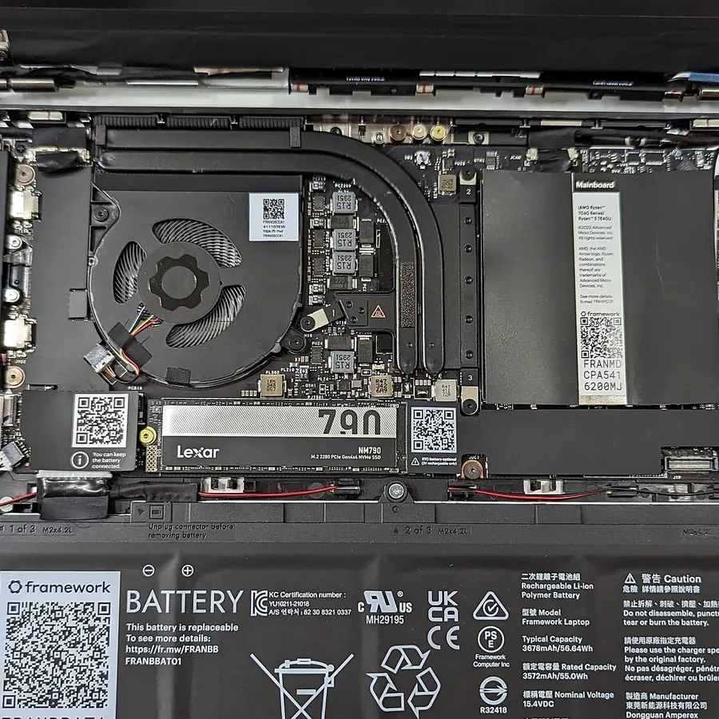
04 / 06Bongkar rapi, pasang rapi. Standar tiap unit.
HP juga, bukan cuma laptop. Bongkar rapi, pasang rapi.
Meja kerja, bukan meja pamer.
09 / Mulai dari sini
Ceritakan kendala laptop atau HP kamu. Kami bantu cek dan tentukan solusi yang paling masuk akal — tanpa harus langsung setuju untuk servis.